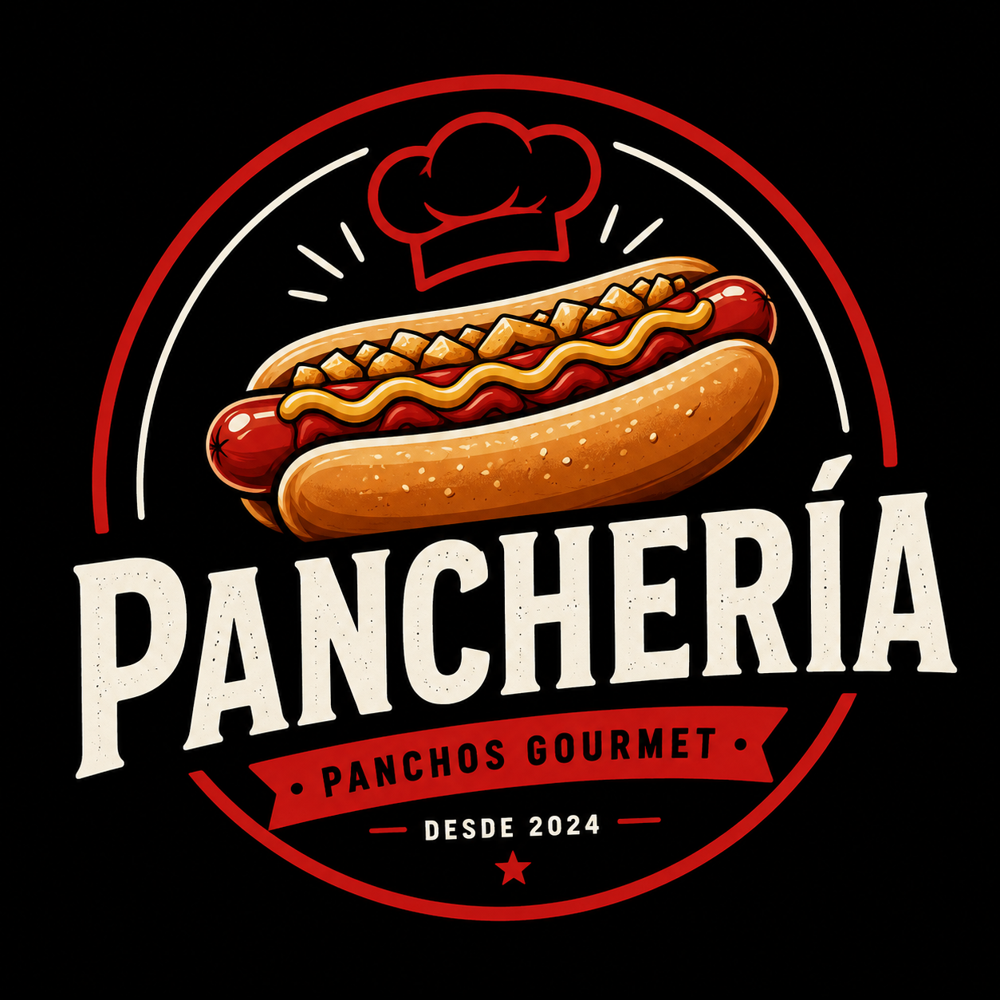

<header
    class="fixed top-0 w-full z-40 bg-white/90 dark:bg-slate-900/90 backdrop-blur-md shadow-sm border-b border-slate-100 dark:border-slate-800 transition-colors">
    <div class="flex justify-between items-center px-5 h-16 w-full max-w-7xl mx-auto">
        <div class="flex items-center gap-4">
            <a class="text-2xl font-black tracking-tighter text-red-600 font-['Plus_Jakarta_Sans'] uppercase flex items-center gap-2 hover:opacity-80 transition-opacity"
                href="index.html#inicio">
                

                Panchería
            </a>
        </div>
        <!-- Nav PC -->
        <div class="hidden md:flex gap-6 items-center">
            <a class="nav-link text-slate-600 dark:text-slate-400 font-['Plus_Jakarta_Sans'] font-bold text-base hover:bg-slate-50 dark:hover:bg-slate-800 transition-colors px-3 py-2 rounded-lg"
                href="index.html#inicio">
                Inicio
            </a>
            <a class="nav-link text-slate-600 dark:text-slate-400 font-['Plus_Jakarta_Sans'] font-bold text-base hover:bg-slate-50 dark:hover:bg-slate-800 transition-colors px-3 py-2 rounded-lg"
                href="index.html#menu">
                Menú
            </a>
            <a class="nav-link text-slate-600 dark:text-slate-400 font-['Plus_Jakarta_Sans'] font-bold text-base hover:bg-slate-50 dark:hover:bg-slate-800 transition-colors px-3 py-2 rounded-lg flex items-center gap-1"
                href="carrito.html">
                <span class="material-symbols-outlined text-[20px]">
                    shopping_cart
                </span>

                Carrito
            </a>
            <!-- Theme Toggle PC -->
            <button
                class="w-10 h-10 rounded-full flex items-center justify-center bg-slate-100 dark:bg-slate-800 text-slate-600 dark:text-slate-300 hover:scale-110 active:scale-95 transition-all"
                id="theme-toggle-pc">
                <span class="material-symbols-outlined theme-toggle-icon">
                    dark_mode
                </span>
            </button>
        </div>
        <!-- Mobile Header Extra -->
        <div class="md:hidden flex items-center gap-2">
            <button
                class="w-10 h-10 rounded-full flex items-center justify-center bg-slate-100 dark:bg-slate-800 text-slate-600 dark:text-slate-300 active:scale-90 transition-all"
                id="theme-toggle-mobile">
                <span class="material-symbols-outlined theme-toggle-icon">
                    dark_mode
                </span>
            </button>
        </div>
    </div>
</header>
<!-- NAVBAR MOBILE -->

<nav
    id="mobile-bottom-nav"
    class="mobile-bottom-nav md:hidden fixed bottom-0 left-0 w-full z-50 flex justify-around items-center px-4 h-20 bg-white/95 dark:bg-slate-900/95 backdrop-blur-md border-t border-slate-100 dark:border-slate-800 shadow-[0_-4px_12px_rgba(29,53,87,0.08)] rounded-t-2xl transition-colors">
    <a class="nav-mobile-link flex flex-col items-center justify-center text-slate-400 dark:text-slate-500 hover:text-red-500 active:scale-90 transition-transform duration-150"
        href="index.html#inicio">
        <span class="material-symbols-outlined">
            home
        </span>
        <span class="font-['Plus_Jakarta_Sans'] text-[11px] font-bold uppercase tracking-wider mt-1">
            Inicio
        </span>
    </a>
    <a class="nav-mobile-link flex flex-col items-center justify-center text-slate-400 dark:text-slate-500 hover:text-red-500 active:scale-90 transition-transform duration-150"
        href="index.html#menu">
        <span class="material-symbols-outlined">
            restaurant_menu
        </span>
        <span class="font-['Plus_Jakarta_Sans'] text-[11px] font-bold uppercase tracking-wider mt-1">
            Menú
        </span>
    </a>
    <a class="nav-mobile-link flex flex-col items-center justify-center text-slate-400 dark:text-slate-500 hover:text-red-500 active:scale-90 transition-transform duration-150"
        href="carrito.html">
        <span class="material-symbols-outlined">
            shopping_basket
        </span>
        <span class="font-['Plus_Jakarta_Sans'] text-[11px] font-bold uppercase tracking-wider mt-1">
            Carrito
        </span>
    </a>
</nav>